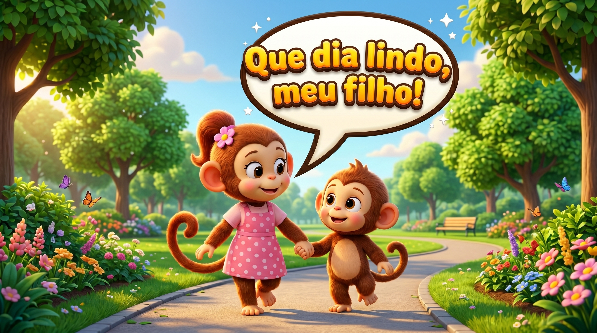

A calma é quando o corpo fica solto e a respiração tranquila. Nada está apertando
por dentro, e eu consigo escutar e pensar com mais clareza. É um lugar bom pra voltar
sempre que eu precisar.
Como o meu corpo fica
😌 Respiração tranquila🧘 Corpo solto🌬️ Ombros relaxados🙂 Pensamento claro💚 Sensação de paz
Quando eu sinto isso, eu sei: estou em paz. Que bom.
O Kaco também sente

O Kaco e a mamãe caminhando tranquilos. "Que dia lindo!" Esse é o jeitinho calmo de que ele gosta.
Como eu volto pra calma
🫁
Respiro devagar, bem fundo.
👀
Olho com atenção pra uma coisa: um som, uma cor, um objeto.
🐢
Faço tudo mais devagar.
🧸
Fico perto de quem me deixa em paz.
📍
Lembro como cheguei aqui, pra voltar quando precisar.
Vamos respirar com o Kaco 🐒
Siga a bolinha: enche o ar devagar e solta devagar.
respira…
A calma mora dentro de mim. Sempre que o mundo ficar barulhento, eu posso respirar e voltar pra ela. 💚